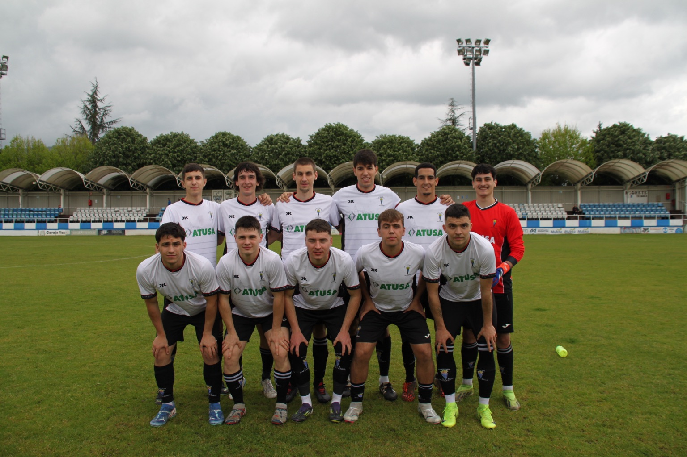

EL SD SALVATIERRA SE CLASIFICA A LOS PLAY-OFFS
El SD Salvatierra ha logrado clasificarse para los play-off de
ascenso tras finalizar la temporada en sexta posición con 20
puntos. Su balance ha sido de 5 victorias, 5 empates y 6 derrotas,
con 33 goles a favor y 34 en contra. A pesar de una campaña
irregular, el equipo ha conseguido colarse en la fase decisiva y
se enfrentará en semifinales al CD Nanclares, que terminó tercero
en la tabla. Será un reto exigente, pero la ilusión por el ascenso
sigue intacta en Salvatierra.

EL SD SALVATIERRA GOLPEA PRIMERO
El SD Salvatierra dio un paso importante hacia la final del
play-off de ascenso tras imponerse por 2-0 al CD Nanclares en el
partido de ida. Gorka abrió el marcador en el minuto 19 y Salek
amplió la ventaja en el 67, dejando encarrilada la eliminatoria.
Con dos goles a favor, el equipo afrontará el partido de vuelta en
el campo de Arrate con la ilusión de sellar su pase a la final.

EL SD SALVATIERRA ES FINALISTA
La SD Salvatierra protagonizó una remontada épica en el campo de
Arrate y logró el pase a la final del play-off de ascenso. El CD
Nanclares igualó la eliminatoria rápidamente con goles en el
minuto 8 y el 17. Poco después, un penalti a favor permitió al
Salvatierra recortar distancias y ponerse 2-3 en el global. Sin
embargo, en el último minuto del tiempo reglamentario, un penalti
en contra significó el 3-3, llevando el partido a la prórroga,
donde el empate beneficiaba al equipo local. Cuando todo parecía
perdido, Tirfe apareció en el minuto 115 para marcar el gol
decisivo y clasificar al Salvatierra para la gran final.

A UN PASO DEL OBJETIVO
Tras una emocionante semifinal, la SD Salvatierra disputará la
gran final del play-off de ascenso ante el Treviño. El partido
decisivo se jugará en campo neutral, en el estadio de Astrónomos.
Los de Salvatierra llegan con la moral en alto tras eliminar al CD
Nanclares en una vibrante eliminatoria, y ahora buscarán culminar
su gesta con el ascenso. Enfrente tendrán a un Treviño sólido y
competitivo, lo que promete una final intensa y emocionante. Todo
por decidir en 90 (o más) minutos.